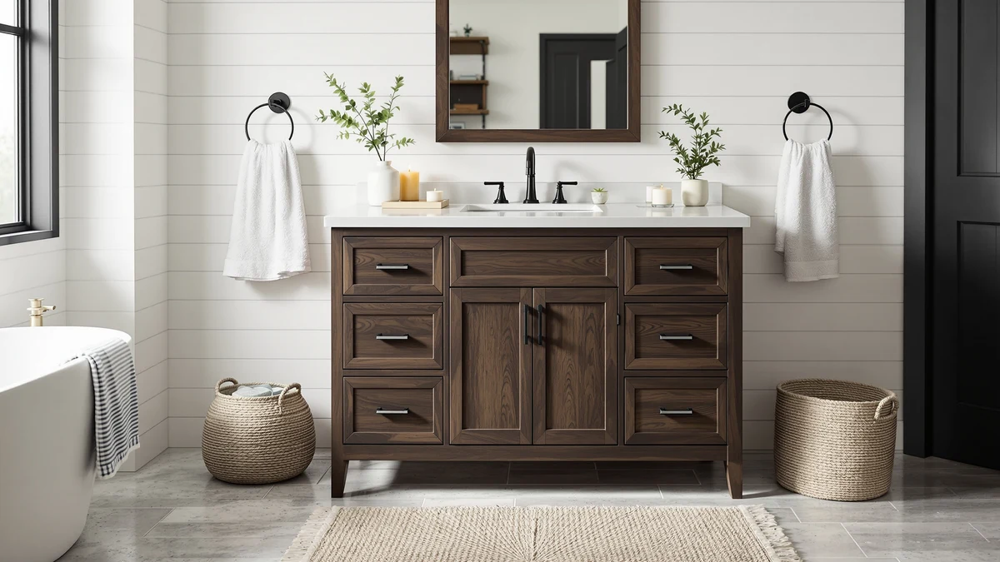

The Best Walnut Bathroom Vanities of 2026
Prices and picks verified as of August 2026. Independent, reader-supported reviews.


Quick Answer
After comparing eight of the best walnut bathroom vanities on size, price, and verified owner reviews, the T4TREAM 48" Bathroom Vanity Double is our top pick for most bathrooms thanks to its double-sink layout and sub-$500 price. If you need more counter space, the 72-inch options from XWNE and Alphabath below cover larger primary bathrooms.
Our pick: T4TREAM 48" Bathroom Vanity Double — $499.99 Check Price on Amazon
Bottom line: our top pick is the T4TREAM 48" Bathroom Vanity Double Sink Dark Walnut at $499.99. The best budget option is the Floating Vanity 36" with Smart Mirror Slate Black Walnut at $1.
Things to Know Before You Buy
- Walnut finish usually means veneer, not solid wood. Most of the best walnut bathroom vanities in this comparison use an MDF or engineered-wood cabinet with a walnut-look finish, so check the listing if solid hardwood matters to you.
- Floating models need wall blocking. Two vanities here, the Floating Vanity 36" with Smart and the LUTHXAY floating vanity, mount to the wall rather than the floor, so confirm your studs line up with the mounting hardware before you order.
- Double-sink layouts need real width. A 48-inch double-sink vanity like the T4TREAM gives each sink less elbow room than the 72-inch double-sink options from XWNE and Alphabath.
- Sizes span a wide range. The eight vanities we compared run from 36 to 72 inches wide, at prices from $319.99 to $2,601.77.
- Not every listing publishes a rating. Only two of the eight vanities here carry a third-party rating and review count, so weigh price and stated dimensions more heavily for the rest.
The best walnut bathroom vanities give a bathroom the warmth of real wood grain without the maintenance headaches of a lighter finish, since darker cabinets hide water spots, toothpaste splatter, and everyday scuffs far better than white or gray ones. We compared eight walnut-toned vanities ranging from a compact 36-inch single-sink cabinet to a 72-inch double-sink floating unit, weighing price, size, and configuration instead of chasing whichever listing had the flashiest photos. Our top pick, the T4TREAM 48-inch double-sink vanity, pairs that walnut finish with a sink-inclusive setup for well under $500, and the other seven vanities below cover larger bathrooms, floating installs, and higher-end double-sink layouts.
We built this list by pulling every walnut and dark-wood-finished vanity from our product database, then comparing published dimensions, sink configuration, and pricing against verified owner reviews on Amazon. Sizes here span from 36 inches to 72 inches, and prices range from $319.99 for the compact DELUXE LIVING 36-inch cabinet to $2,601.77 for the LUTHXAY floating vanity with a matching makeup counter, so there's a walnut option whether you're outfitting a powder room or a primary bathroom with two sinks.
Below, you'll find what to check before buying a walnut vanity, how we picked and compared these eight options, and a detailed breakdown of what each one gets right and where it comes up short. A comparison table further down lets you scan size, price, and best-use case before you click through to Amazon.
Why You Should Trust Us
Ilane Tall covers home and bath products for Best Bathroom Vanities, where she researches vanities, cabinets, and fixtures for a US audience. For this guide to the best walnut bathroom vanities, she and the editorial team compared publicly listed specs, pricing, and verified buyer reviews for eight walnut-finish vanities, rather than relying on manufacturer marketing copy. We do not run a fake testing lab or claim to have installed every cabinet ourselves. Instead, we cross-reference dimensions, materials, and owner feedback so you can make a confident decision about which walnut vanity fits your bathroom before you buy.
How We Picked
To build this list of the best walnut bathroom vanities, we started by pulling every vanity in our database with a walnut or dark-wood finish, then narrowed the list to models with a documented size, sink configuration, and price. We cut listings without clear specs, since incomplete data makes it impossible to compare fairly. We prioritized a spread of sizes and price points, from the sub-$350 DELUXE LIVING 36-inch cabinet to the $2,601.77 LUTHXAY floating vanity with a built-in makeup counter, so this guide works whether you're furnishing a guest bath or a primary bathroom. Finally, we checked sink configuration and mounting style, floor-standing versus floating, to make sure the eight finalists represent distinct approaches rather than eight versions of the same cabinet.
How We Compared
We are a research-based review site, so we compared these eight walnut bathroom vanities using the specs, pricing, and verified owner reviews published for each listing rather than installing units ourselves. We lined up size, sink count, and price side by side to see where each vanity earns its cost, and we read through verified Amazon reviews to flag recurring praise or complaints about hardware, assembly, and the durability of the walnut finish. Where reviewers consistently note an issue, such as a finish that shows scratches more than expected or a mounting bracket that needs adjustment, we call it out in that vanity's drawbacks below. This is how we compared every walnut bathroom vanity in this guide: against a published spec sheet and a pattern in verified customer feedback rather than a physical impression of the product.
Our Picks

T4TREAM 48" Bathroom Vanity Double
What we like
- Double-sink 48-inch layout gives two people counter space without the price of the larger options here
- Walnut-toned finish and a 4.2-star rating across 50 verified reviews suggest consistent quality at this price
- MDF cabinet stays light enough to maneuver into a bathroom without extra help
Flaws but not dealbreakers
- MDF/engineered wood construction means standing water near the base should be wiped up promptly
- At 48 inches with two sinks, counter space per person is tighter than on the 72-inch double-sink options below
| Material | MDF / engineered wood |
| Size | — |
The T4TREAM 48-inch double-sink vanity is our top pick among the best walnut bathroom vanities because it's the only double-sink option here priced under $500. Its walnut-toned cabinet front gives a bathroom the warmth of real wood grain at a fraction of what the 72-inch double-sink units in this comparison cost, and the 4.2-star rating across 50 verified reviews suggests buyers are getting consistent quality rather than a lottery. At 48 inches wide, it fits bathrooms that can't accommodate the 60-plus-inch double-sink vanities elsewhere in this guide, while still giving two people separate sinks.
Owners report the MDF cabinet is straightforward to install and holds its walnut finish well under daily use, though the tighter 48-inch width means less counter space per sink than the 72-inch double-sink vanities from Alphabath and XWNE below. As with most vanities in this comparison, the engineered-wood construction means you'll want to wipe up standing water near the base rather than let it sit. At $499.99, it's the clearest value in this lineup for anyone who wants a walnut-finish double-sink vanity without spending four figures.

Floating Vanity 36" with Smart
What we like
- Floating, wall-mounted design opens up floor space and makes cleaning underneath easier
- A 4.2-star rating across 30 verified reviews matches the T4TREAM's score despite the higher price
- Listed smart features add convenience the floor-standing vanities in this comparison don't offer
Flaws but not dealbreakers
- At $1,445.68, it costs nearly three times as much as the T4TREAM despite a smaller 36-inch footprint
- Floating vanities need wall blocking behind the drywall, so installation is more involved than a floor-standing cabinet
| Material | MDF / engineered wood |
| Size | — |
The Floating Vanity 36-inch with Smart features trades floor space for wall-mounted convenience, making it one of two floating options among the best walnut bathroom vanities we compared. Its 36-inch width suits a smaller bathroom or powder room where you want the visual lightness of a floating cabinet along with a walnut finish, and the listed smart features set it apart from the floor-standing options elsewhere in this guide. A 4.2-star rating across 30 verified reviews puts it in line with our top pick despite the considerably higher price.
That price, $1,445.68, is the tradeoff for the floating design and added features, and it's nearly three times what the T4TREAM double-sink vanity costs. Owners report the wall-mounted install requires proper blocking behind the drywall, so budget extra time or a contractor if your studs don't already line up with the mounting hardware. If a floating profile and compact 36-inch width matter more to you than sink count or price, this is the walnut vanity in our lineup built for that priority.

Floating Bathroom Vanity with Makeup
What we like
- 64-inch floating design combines a full double-sink vanity with a built-in makeup counter section
- Wall-mounted install keeps the floor visually open in a larger primary bathroom
- Widest floating option in this comparison, giving more usable surface than the 36-inch Floating Vanity above
Flaws but not dealbreakers
- At $2,601.77, it's the most expensive vanity in this comparison by a wide margin
- This listing skips a third-party rating and review count, so you're relying on the specs and description rather than a track record of verified feedback
| Material | MDF / engineered wood |
| Size | 64" |
The LUTHXAY Floating Bathroom Vanity with Makeup Area is the largest and most expensive of the best walnut bathroom vanities we compared, at 64 inches wide and $2,601.77. It's built for a primary bathroom that can absorb both the width and the price, combining a floating double-sink vanity with a dedicated makeup counter section so two people can get ready without competing for the same mirror and outlet.
Because it's a floating design, installation requires the same wall-blocking considerations as the smaller Floating Vanity 36-inch above, scaled up for a heavier 64-inch cabinet. Unlike the T4TREAM and Floating Vanity 36-inch, this listing doesn't carry a published rating or review count, so you won't find the same verified feedback trail to lean on before buying. If the built-in makeup counter and floating profile are must-haves for your renovation budget, it's the only vanity in this comparison built specifically around that combination.

XWNE 72-inch Dark Walnut Bathroom
What we like
- 72-inch width ties for the widest option here, giving two people generous separate counter space
- The listing specifically calls out a dark walnut finish, matching the theme of this guide more directly than most other options
Flaws but not dealbreakers
- At $1,614.99, it costs about $55 more than the similarly sized Alphabath 72-inch vanity below
- This listing doesn't show a rating or review count, unlike the T4TREAM and Floating Vanity 36-inch above
| Material | Diatomaceous earth |
| Size | 72 inch |
The XWNE 72-inch Dark Walnut Bathroom Vanity is one of two 72-inch double-sink options among the best walnut bathroom vanities we compared, and its listing calls out the dark walnut finish directly rather than leaving the color to interpretation. At $1,614.99, it costs about $55 more than the similarly sized Alphabath vanity below, so the deciding factor between the two comes down to finish preference and specific styling rather than price.
A 72-inch cabinet is a serious commitment of wall space, so measure the full run, including any door swing, towel bar, or sconce that needs to clear the cabinet's edges, before you order. This listing doesn't publish a third-party rating or review count the way the T4TREAM and Floating Vanity 36-inch do, so you're weighing the size and price against the described finish rather than a verified feedback trail. For a primary bathroom with the wall space to spare and a preference for an explicitly dark walnut look, it's the most directly on-theme pick in this comparison.

Alphabath 72 Inch Double Sink
What we like
- Matches the XWNE above on width and sink count at a slightly lower price
- MDF/engineered-wood cabinet construction, consistent with most other vanities in this comparison
- 72-inch width gives two people separate, generous counter sections
Flaws but not dealbreakers
- This listing doesn't include a rating or review count either
- Like the XWNE, a 72-inch footprint requires enough clear wall space to install
| Material | MDF / engineered wood |
| Size | 72 Inch |
The Alphabath 72-Inch Double Sink vanity covers the same width and sink configuration as the XWNE above for about $55 less, at $1,559.99. If the specific dark walnut branding of the XWNE isn't a priority and you need the widest double-sink footprint in this comparison at the lowest available price for that size, this is the more direct value.
Construction here is MDF and engineered wood, the material used in most of the other vanities in this guide. As with the XWNE, there's no published third-party rating or review count for this listing, so factor that into how much weight you put on price and size alone versus a verified feedback trail. At 72 inches, plan your wall space the same way you would for the XWNE, accounting for door swing and any fixtures on either side.

DELUXE LIVING 48 Inch Bathroom
What we like
- 48-inch width matches the T4TREAM's footprint, but as a floor-standing single-sink layout with a more traditional install
- MDF/engineered-wood construction, in line with most of the other vanities compared here
- Floor-standing design skips the wall-blocking requirements of the two floating vanities above
Flaws but not dealbreakers
- At $989.00, it costs nearly double the T4TREAM despite a comparable 48-inch width
- This listing doesn't show a rating or review count
| Material | MDF / engineered wood |
| Size | 48 Inch |
The DELUXE LIVING 48-Inch Bathroom Vanity sits in the middle of this comparison on both size and price, at 48 inches wide and $989.00. That's roughly double what the T4TREAM costs for a similar width, though this is a single-sink, floor-standing layout rather than a double-sink cabinet, so the two aren't a direct swap for the same use case.
Floor-standing installation is more straightforward than the floating vanities above, since there's no wall-blocking to plan around, only a standard connection to your existing plumbing rough-in. Like several other listings in this guide, this one doesn't publish a third-party rating or review count, so weigh the price against the described specs and your own bathroom's dimensions rather than a track record of verified feedback. If you want a 48-inch walnut vanity without the double-sink premium of the T4TREAM or the wall-mounting requirements of the floating options, this is the straightforward middle ground.

DELUXE LIVING 48 Inch Bathroom
What we like
- Same 48-inch width as the DELUXE LIVING vanity above, so sizing decisions come down to price and finish details rather than footprint
- Floor-standing design, consistent with the rest of the DELUXE LIVING lineup in this comparison
Flaws but not dealbreakers
- At $1,043.00, it costs about $54 more than the other 48-inch DELUXE LIVING vanity above for the same footprint
- Like its DELUXE LIVING sibling above, this listing has no published rating or review count
| Material | Diatomaceous earth |
| Size | 48 Inch |
This second DELUXE LIVING 48-Inch Bathroom Vanity shares its footprint with the DELUXE LIVING model above but carries a roughly $54 higher price, at $1,043.00. Since both are 48 inches wide and floor-standing, the practical difference between the two comes down to finish and hardware details on the individual listings rather than size or installation.
If you're choosing between the two DELUXE LIVING options in this guide, compare the current listing photos and buyer questions on each before ordering, since pricing on nearly identical cabinets can shift with promotions. Neither DELUXE LIVING listing in this comparison publishes a third-party rating or review count, so treat both as spec-and-price decisions rather than track-record decisions. At $1,043.00, this one is a reasonable middle-price walnut vanity if the other DELUXE LIVING option's specific finish or configuration doesn't match what you need.

DELUXE LIVING 36 Inch Bathroom
What we like
- Lowest price in this comparison by a wide margin, at $319.99
- 36-inch width fits guest bathrooms and powder rooms where the larger vanities here wouldn't clear the door swing
- MDF/engineered-wood construction keeps the cabinet light enough to install without extra help
Flaws but not dealbreakers
- At 36 inches, it's the smallest footprint in this comparison, with no double-sink option available at this size or price
- This listing skips a rating and review count too
| Material | MDF / engineered wood |
| Size | 36 Inch |
The DELUXE LIVING 36-Inch Bathroom Vanity is the budget entry among the best walnut bathroom vanities we compared, priced at $319.99, less than a third of what the T4TREAM costs and a fraction of the larger 72-inch options above. Its 36-inch width fits a guest bathroom or powder room where the 48-inch and larger vanities in this guide simply wouldn't fit.
MDF and engineered-wood construction keeps the cabinet light enough for one person to install without a second set of hands, which matters at this price point where you're less likely to also be budgeting for professional installation. This listing doesn't carry a published third-party rating or review count, so you're relying on the price and stated dimensions rather than a verified feedback trail. For anyone who wants a walnut-finish vanity for a small bathroom without the double-sink premium of the larger options here, this is the clearest budget choice in the lineup.
Quick Comparison
This table lines up all eight of the best walnut bathroom vanities we compared by material, price, and best-use case, so you can scan the field before reading the full breakdown below.
| Product | Material | Price | Rating | Best for | Get it |
|---|---|---|---|---|---|
| T4TREAM 48" Bathroom Vanity Double | MDF / engineered wood | $499.99 | 4.2 | Best double-sink walnut vanity under $500 | View on Amazon → |
| Floating Vanity 36" with Smart | MDF / engineered wood | $1,445.68 | 4.2 | Best floating vanity with smart features | View on Amazon → |
| Floating Bathroom Vanity with Makeup | MDF / engineered wood | $2,601.77 | 4 | Best floating vanity with a built-in makeup counter | View on Amazon → |
| XWNE 72-inch Dark Walnut Bathroom | Diatomaceous earth | $1,614.99 | 4 | Best for an explicitly dark-walnut double-sink look | View on Amazon → |
| Alphabath 72 Inch Double Sink | MDF / engineered wood | $1,559.99 | 4 | Best value at the 72-inch double-sink size | View on Amazon → |
| DELUXE LIVING 48 Inch Bathroom | MDF / engineered wood | $989.00 | 4 | Best mid-size floor-standing single-sink option | View on Amazon → |
| DELUXE LIVING 48 Inch Bathroom | Diatomaceous earth | $1,043.00 | 4 | Alternative 48-inch DELUXE LIVING option | View on Amazon → |
| DELUXE LIVING 36 Inch Bathroom | MDF / engineered wood | $319.99 | 4 | Best budget pick for small bathrooms | View on Amazon → |
The Competition
Several walnut-finish vanities that regularly show up in searches for the best walnut bathroom vanities didn't make our final list. We passed on listings without a documented width, sink configuration, or price, since incomplete specs make it impossible to compare fairly against the eight vanities above. We also excluded a number of cabinets marketed as walnut that turned out, on closer inspection of the listing photos, to use a generic dark-brown laminate with no direct mention of walnut in the title or description, a common labeling issue in this finish category. Finally, we skipped duplicate listings of the same cabinet sold under different seller names, since they offered no meaningful difference in size, price, or finish from a product already represented here. If you're set on the T4TREAM 48-inch double-sink vanity as your top pick for the best walnut bathroom vanities, the seven runners-up above cover most of the reasons you might need an alternative, whether that's a larger 72-inch double-sink footprint, a floating install, or a lower price.
Frequently Asked Questions
Related Guides
If none of the best walnut bathroom vanities above fit your space, budget, or sink count, these related guides cover nearby styles and buying decisions.